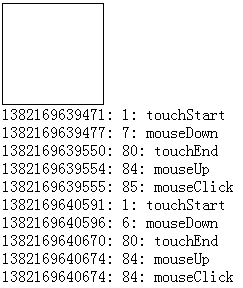

前言
这篇博客有点长，如果你是高手请您读一读，能对其中的一些误点提出来，以免我误人子弟，并且帮助我提高
如果你是javascript菜鸟，建议您好好读一读，真的理解下来会有不一样的收获
在下才疏学浅，文中难免会有不同程度的错误，请您指正留言
PS：事件阶段一节请看最新博客，之前理解有误
javascript事件基础
我们的网页之所以丰富多彩并具有交互功能，是因为我们的javascript脚本语言，而javascript与HTML之间的交互又是通过事件机制实现的
所以，事件是javascript一大核心，深入了解事件机制在我们遇到较困难问题时候十分有帮助
所谓事件，就是网页发生的一些瞬间（比如点击、滑动），在这些瞬间我们使用事件监听器（回调函数）去订阅事件，在事件发生时候我们的回调函数就会触发
观察者模式的javascript事件机制的基石，这种异步事件编程模型，就是用户产生特定的操作，浏览器就会产生特定的事件，我们若是订阅了事件，回调就会触发
好了，我们下面就来研究下javascript事件机制的几个关键点。
事件捕获/冒泡
网页上的布局很复杂，我们对页面的单一操作有可能产生预计以外的影响：
比如我点击一个span，我可能就想点击一个span，试试上他是先点击document，然后点击事件传递到span的，而且并不会在span停下，span有子元素就会继续往下，最后会依次回传至document，我们这里偷一张图：

我们这里偷了一张图，这张图很好的说明了事件的传播方式
事件冒泡即由最具体的元素（文档嵌套最深节点）接收，然后逐步上传至document
事件捕获会由最先接收到事件的元素然后传向最里边（我们可以将元素想象成一个盒子装一个盒子，而不是一个积木堆积）
这里我们进入dom事件流，这里我们详细看看javascript事件的传递方式
DOM事件流
DOM2级事件规定事件包括三个阶段：
① 事件捕获阶段
② 处于目标阶段
③ 事件冒泡阶段
这里说起来不太明显，我们来一个例子吧：
15708845301073.jpg
1 <html xmlns="http://www.w3.org/1999/xhtml"> 2 <head> 3 <title></title> 4 <style type="text/css"> 5 #p { width: 300px; height: 300px; padding: 10px; border: 1px solid black; } 6 #c { width: 100px; height: 100px; border: 1px solid red; } 7 </style> 8 </head> 9 <body> 10 <div id="p"> 11 parent 12 <div id="c"> 13 child 14 </div> 15 </div> 16 <script type="text/javascript"> 17 var p = document.getElementById('p'), 18 c = document.getElementById('c'); 19 c.addEventListener('click', function () { 20 alert('子节点捕获') 21 }, true); 22 23 c.addEventListener('click', function () { 24 alert('子节点冒泡') 25 }, false); 26 </script> 27 </body> 28 </html>
这个代码比较简单，我们主要点击child即可，这里要证明的就是点击事件是先捕获再冒泡，所以我们这里来一个复杂点的关系：
274411910134217.jpg
1 <html xmlns="http://www.w3.org/1999/xhtml"> 2 <head> 3 <title></title> 4 <style type="text/css"> 5 #p { width: 300px; height: 300px; padding: 10px; border: 1px solid black; } 6 #c { width: 100px; height: 100px; border: 1px solid red; } 7 </style> 8 </head> 9 <body> 10 <div id="p"> 11 parent 12 <div id="c"> 13 child 14 </div> 15 </div> 16 <script type="text/javascript"> 17 var p = document.getElementById('p'), 18 c = document.getElementById('c'); 19 c.addEventListener('click', function () { 20 alert('子节点捕获') 21 }, true); 22 23 c.addEventListener('click', function () { 24 alert('子节点冒泡') 25 }, false); 26 27 p.addEventListener('click', function () { 28 alert('父节点捕获') 29 }, true); 30 31 p.addEventListener('click', function () { 32 alert('父节点冒泡') 33 }, false); 34 </script> 35 </body> 36 </html>
现在这个家伙就比较实在了，不注意就容易晕的，我们来稍微理一理：
① 点击parent，事件首先在document上然后parent捕获到事件，处于目标阶段然后event.target也等于parent，所以触发捕获事件
由于target与currentTarget相等了，所以认为到底了，开始冒泡，执行冒泡事件
② 点击child情况有所不同，事件由document传向parent执行事件，然后传向child最后开始冒泡，所以执行顺序各位一定要清晰

至此，我们事件传输结束，下面开始研究事件参数
事件对象
所谓事件对象，是与特定对象相关，并且包含该事件详细信息的对象。
事件对象作为参数传递给事件处理程序（IE8之前通过window.event获得），所有事件对象都有事件类型type与事件目标target（IE8之前的srcElement我们不关注了）
各个事件的事件参数不一样，比如鼠标事件就会有相关坐标，包含和创建他的特定事件有关的属性和方法，触发的事件不一样，参数也不一样（比如鼠标事件就会有坐标信息），我们这里题几个较重要的
PS：以下的兄弟全部是只读的，所以不要妄想去随意更改，IE之前的问题我们就不关注了
bubbles
表明事件是否冒泡
cancelable
表明是否可以取消事件的默认行为
currentTarget
某事件处理程序当前正在处理的那个元素
defaultPrevented
为true表明已经调用了preventDefault（DOM3新增）
eventPhase
调用事件处理程序的阶段：1 捕获；2 处于阶段；3 冒泡阶段
这个属性的变化需要在断点中查看，不然你看到的总是0
target
事件目标（绑定事件那个dom）
trusted
true表明是系统的，false为开发人员自定义的（DOM3新增）
type
事件类型
view
与事件关联的抽象视图，发生事件的window对象
preventDefault
取消事件默认行为，cancelable是true时可以使用
stopPropagation
取消事件捕获/冒泡，bubbles为true才能使用
stopImmediatePropagation
取消事件进一步冒泡，并且组织任何事件处理程序被调用（DOM3新增）
在我们的事件处理内部，this与currentTarget相同
createEvent
可以在document对象上使用createEvent创建一个event对象
DOM3新增以下事件：
UIEvents
MouseEvents
MutationEvents，一般化dom变动
HTMLEvents一般dom事件
创建鼠标事件时需要创建的事件对象需要提供指定的信息（鼠标位置信息），我们这里提供以下参数：
1 var type = 'click'; //要触发的事件类型 2 var bubbles = true; //事件是否可以冒泡 3 var cancelable = true; //事件是否可以阻止浏览器默认事件 4 var view = document.defaultView; //与事件关联的视图，该属性默认即可，不管 5 var detail = 0; 6 var screenX = 0; 7 var screenY = 0; 8 var clientX = 0; 9 var clientY = 0; 10 var ctrlKey = false; //是否按下ctrl 11 var altKey = false; //是否按下alt 12 var shiftKey = false; 13 var metaKey = false; 14 var button = 0;//表示按下哪一个鼠标键 15 var relatedTarget = 0; //模拟mousemove或者out时候用到，与事件相关的对象 16 17 var event = document.createEvent('MouseEvents'); 18 event.initMouseEvent(type, bubbles, cancelable, view, detail, screenX, screenY, clientX, clientY, 19 ctrlKey, altKey, shiftKey, metaKey, button, relatedTarget);
如此，我们就自己创建了一个event对象，然后可以传给我们自己创建的事件，这个知识点，我们下面再说
PS：值得注意的是，我们自己创建的event对象可以有一点不一样的东西，比如我们的事件对象可能多了一个这种属性：
event.flag = '叶小钗'
事件模拟
事件模拟是javascript事件机制中相当有用的功能，理解事件模拟与善用事件模拟是判别一个前端的重要依据，所以各位一定要深入理解（我理解较水）
事件一般是由用户操作触发，其实javascript也是可以触发的，比较重要的是，javascript的触发事件还会冒泡哦！！！
意思就是，javascript触发的事件与浏览器本身触发其实是一样的（并不完全一致）
如此，我们这里来通过键盘事件触发刚刚的点击事件吧，我们这里点击键盘便触发child的点击，看看他的表现如何
PS：由于是键盘触发，便不具有相关参数了，我们可以捕捉event参数，这对我们队事件传输的理解有莫大的帮助：
我们这里先创建事件参数，然后给键盘注册事件，在点击键盘时候便触发child的点击事件，各位试试看：
PS：这个可能需要打开网页点击空格测试了
31964246085156.jpg
1 <html xmlns="http://www.w3.org/1999/xhtml"> 2 <head> 3 <title></title> 4 <style type="text/css"> 5 #p { width: 300px; height: 300px; padding: 10px; border: 1px solid black; } 6 #c { width: 100px; height: 100px; border: 1px solid red; } 7 </style> 8 </head> 9 <body> 10 <div id="p"> 11 parent 12 <div id="c"> 13 child 14 </div> 15 </div> 16 <script type="text/javascript"> 17 alert = function (msg) { 18 console.log(msg); 19 } 20 21 var p = document.getElementById('p'), 22 c = document.getElementById('c'); 23 c.addEventListener('click', function (e) { 24 console.log(e); 25 alert('子节点捕获') 26 }, true); 27 c.addEventListener('click', function (e) { 28 console.log(e); 29 alert('子节点冒泡') 30 }, false); 31 32 p.addEventListener('click', function (e) { 33 console.log(e); 34 alert('父节点捕获') 35 }, true); 36 37 p.addEventListener('click', function (e) { 38 console.log(e); 39 alert('父节点冒泡') 40 }, false); 41 42 document.addEventListener('keydown', function (e) { 43 if (e.keyCode == '32') { 44 var type = 'click'; //要触发的事件类型 45 var bubbles = true; //事件是否可以冒泡 46 var cancelable = true; //事件是否可以阻止浏览器默认事件 47 var view = document.defaultView; //与事件关联的视图，该属性默认即可，不管 48 var detail = 0; 49 var screenX = 0; 50 var screenY = 0; 51 var clientX = 0; 52 var clientY = 0; 53 var ctrlKey = false; //是否按下ctrl 54 var altKey = false; //是否按下alt 55 var shiftKey = false; 56 var metaKey = false; 57 var button = 0; //表示按下哪一个鼠标键 58 var relatedTarget = 0; //模拟mousemove或者out时候用到，与事件相关的对象 59 var event = document.createEvent('Events'); 60 event.myFlag = '叶小钗'; 61 event.initEvent(type, bubbles, cancelable, view, detail, screenX, screenY, clientX, clientY, 62 ctrlKey, altKey, shiftKey, metaKey, button, relatedTarget); 63 64 console.log(event); 65 c.dispatchEvent(event); 66 } 67 }, false); 68 </script> 69 </body> 70 </html>
各位，这里看到了与之前的相同或者不同吗？？？这些都是很关键的哦，其实主要不同就是我们的事件参数没了鼠标位置，多了一个属性：
这里有两点容易让各位造成错觉：
① firefox并不会将myFlag显示到console下面
② chrome如果使用原生alert会阻止第一次父元素捕获，所以各位一定要注意
然后这里还有一个小小知识点：
使用dom.dispatchEvent(event)触发模拟事件
移动端响应速度
有了以上知识点，其实对PC端来说基本够用了，如果再稍微研究下jquery源码就善莫大焉了，但是在移动端却有所不同，我们这里还得来理一理
PS：我这里主要针对点击事件
PC与移动端鼠标事件差异
首先，在移动端mouse事件好像就有点不那么适用了，倒不是说touch事件要比mouse事件好，其实他们底层原理相距不大，主要不同点就是：
移动端会多点触屏
多点触屏就带来了事件对象参数的差异，比如说：

changedTouches/touches/targetTouches
touches：为屏幕上所有手指的信息
PS：因为手机屏幕支持多点触屏，所以这里的参数就与手机有所不同
targetTouches：手指在目标区域的手指信息
changedTouches：最近一次触发该事件的手指信息
比如两个手指同时触发事件，2个手指都在区域内，则容量为2，如果是先后离开的的话，就会先触发一次再触发一次，这里的length就是1，只统计最新的
PS：一般changedTouches的length都是1
touchend时，touches与targetTouches信息会被删除，changedTouches保存的最后一次的信息，最好用于计算手指信息
这里要使用哪个数据各位自己看着办吧，我也不是十分清晰（我这里还是使用changedTouches吧）
以上就是mouse与touch主要不同点，但这些并不是太影响我们的操作，因为到现在为止，我们一般还是使用的是单击
小贴士
国内SPA网站模式较少，目前为止还是以单个网页为主，spa模式对javascript技术要求较高不说，首次加载量大也是不可避免的问题
加之移动端设备今年才普及，而且各自争夺领地、争夺入口，还有其他原因，反正现况是有时做移动端的兼容比做IE的兼容还难
就拿简单的CSS3动画来说，在ios下就有闪动现象，而且还是iPhone4s，就现今更新换代来说，此种情况并不会得到明显好转，而且CSS3动画状态保存问题亦是一大难题
另外，网页想要检测手机是否安装APP也是有很大缺陷，移动端的fixed更不要说，这些问题都需要我们乃至开发商解决
PS：这里扯得有点远，我们继续下面的话题
touch与click响应速度问题
click本身在移动端响应是没有问题的，但是我们点击下来300ms 的延迟却是事实，这种事实造成的原因就是
手机需要知道你是不是想双击放大网页内容
所以click点击响应慢，而touch却不会有这样的限制，于是移动端的touch相当受欢迎，至于鼠标慢，他究竟有多慢，我们来看看：
现在我们在手机上同时触发两者事件看看区别：


1 <!DOCTYPE html PUBLIC "-//W3C//DTD XHTML 1.0 Transitional//EN" "http://www.w3.org/TR/xhtml1/DTD/xhtml1-transitional.dtd"> 2 <html xmlns="http://www.w3.org/1999/xhtml"> 3 <head> 4 <title></title> 5 <script id="others_zepto_10rc1" type="text/javascript" class="library" src="http://sandbox.runjs.cn/js/sandbox/other/zepto.min.js"></script> 6 </head> 7 <body> 8 <div id="d" style="width: 100px; height: 100px; border: 1px solid black;"> 9 </div> 10 </body> 11 <script type="text/javascript"> 12 var startTime; 13 var log = function (msg) { 14 var div = $('<div></div>'); 15 div.html((new Date().getTime()) + ': ' + (new Date().getTime() - startTime) + ': ' + msg) 16 $('body').append(div); 17 18 }; 19 var touchStart = function () { 20 startTime = new Date().getTime(); 21 log('touchStart'); 22 }; 23 var touchEnd = function () { 24 log('touchEnd'); 25 26 }; 27 var mouseDown = function () { 28 log('mouseDown'); 29 }; 30 var mouseClick = function () { 31 log('mouseClick'); 32 }; 33 var mouseUp = function () { 34 log('mouseUp'); 35 36 }; 37 var d = $('#d'); 38 d.bind('mousedown', mouseDown); 39 d.bind('click', mouseClick); 40 d.bind('mouseup', mouseUp); 41 d.bind('touchstart', touchStart); 42 d.bind('touchend', touchEnd); 43 </script> 44 </html>
测试地址:(使用手机)
http://sandbox.runjs.cn/show/ey54cgqf
此处手机与电脑有非常大的区别！！！


结论
不要同时给document绑定鼠标与touch事件
document.addEventListener('mousedown', mouseDown);
document.addEventListener('click', mouseClick);
document.addEventListener('mouseup', mouseUp);
document.addEventListener('touchstart', touchStart);
document.addEventListener('touchend', touchEnd);
这个样子，在手机上不会触发click事件，click事件要绑定到具体元素
PS：此处在ios与android上有不一样的表现，我们后面会涉及
手机上mousedown响应慢
经过测试，电脑上touch与click事件的差距不大，但是手机上，当我们手触碰屏幕时，要过300ms左右才会触发mousedown事件
所以click事件在手机上响应就是慢一拍，我们前面说过为什么click慢了
数据说明

可以看到，在手机上使用click事件其实对用户体验并不好，所以我们可能会逐步使用touch事件，但是真正操作时候你就会知道click的好
好了，此处内容暂时到这，我们先看看zepto的事件机制，下面会提到如何使用touch提升click的响应速度
zepto事件机制
zepto是以轻巧的dom库，这家伙可以说是jquery的html5版本，而且在移动端有媲美jqueryPC端的趋势，如果jquery不予以回击，可能移动端的份额就不行了
我们这里不讨论zepto的其他地方了，我们单独讲他的事件相关提出来看看
注册/注销事件
事件注册是我们项目开发中用得最多的一块，我们一般会使用以下几种方式绑定事件：
el.on(type, function () {});//力推 el.bind(function(){}); el.click(function() {});//不推荐 dom.onclick = function() {};//需要淘汰
以上几种方式用得较多，最后一种在真实的项目中基本不用，单数第二也极少使用，那么zepto内部是怎么实现的呢？
PS：这里，我就不详细说明zepto事件机制了，这里点一下即可
zepto事件机制其实比较简单，他具体流程如下：
① 事件注册时在全局保存事件句柄(handlers = {})
② 提供全局的事件注册点
1 //给元素绑定监听事件,可同时绑定多个事件类型，如['click','mouseover','mouseout'],也可以是'click mouseover mouseout' 2 function add(element, events, fn, selector, getDelegate, capture) { 3 var id = zid(element), 4 set = (handlers[id] || (handlers[id] = [])) //元素上已经绑定的所有事件处理函数 5 eachEvent(events, fn, function (event, fn) { 6 var handler = parse(event) 7 //保存fn,下面为了处理mouseenter, mouseleave时，对fn进行了修改 8 handler.fn = fn 9 handler.sel = selector 10 // 模仿 mouseenter, mouseleave 11 if (handler.e in hover) fn = function (e) { 12 /* 13 relatedTarget为事件相关对象，只有在mouseover和mouseout事件时才有值 14 mouseover时表示的是鼠标移出的那个对象，mouseout时表示的是鼠标移入的那个对象 15 当related不存在，表示事件不是mouseover或者mouseout,mouseover时!$.contains(this, related)当相关对象不在事件对象内 16 且related !== this相关对象不是事件对象时，表示鼠标已经从事件对象外部移入到了对象本身，这个时间是要执行处理函数的 17 当鼠标从事件对象上移入到子节点的时候related就等于this了，且!$.contains(this, related)也不成立，这个时间是不需要执行处理函数的 18 */ 19 var related = e.relatedTarget 20 if (!related || (related !== this && !$.contains(this, related))) return handler.fn.apply(this, arguments) 21 } 22 //事件委托 23 handler.del = getDelegate && getDelegate(fn, event) 24 var callback = handler.del || fn 25 handler.proxy = function (e) { 26 var result = callback.apply(element, [e].concat(e.data)) 27 //当事件处理函数返回false时，阻止默认操作和冒泡 28 if (result === false) e.preventDefault(), e.stopPropagation() 29 return result 30 } 31 //设置处理函数的在函数集中的位置 32 handler.i = set.length 33 //将函数存入函数集中 34 set.push(handler) 35 element.addEventListener(realEvent(handler.e), handler.proxy, eventCapture(handler, capture)) 36 }) 37 }
③ 提供全局的事件注销点
1 $.fn.off = function (event, selector, callback) { 2 return !selector || $.isFunction(selector) ? this.unbind(event, selector || callback) : this.undelegate(selector, event, callback) 3 } 4 5 $.fn.unbind = function (event, callback) { 6 return this.each(function () { 7 remove(this, event, callback) 8 }) 9 } 10 11 function remove(element, events, fn, selector, capture) { 12 var id = zid(element) 13 eachEvent(events || '', fn, function (event, fn) { 14 findHandlers(element, event, fn, selector).forEach(function (handler) { 15 delete handlers[id][handler.i] 16 element.removeEventListener(realEvent(handler.e), handler.proxy, eventCapture(handler, capture)) 17 }) 18 }) 19 }
④ 提供简便写法
$.fn.click = function (fn) { this.bind('click', callback) }
如果需要详细了解的朋友请看此篇博客：
http://www.cnblogs.com/yexiaochai/p/3448500.html
我这里就不详细说明了，这里需要说明的是，zepto提供了两个语法糖：
创建事件参数/触发事件
这两个方法，完全是我们上面代码的缩写，当然他更加健壮，我们后面就可以使用他了
1 $.fn.trigger = function (event, data) { 2 if (typeof event == 'string' || $.isPlainObject(event)) event = $.Event(event) 3 fix(event) 4 event.data = data 5 return this.each(function () { 6 // items in the collection might not be DOM elements 7 // (todo: possibly support events on plain old objects) 8 if ('dispatchEvent' in this) this.dispatchEvent(event) 9 }) 10 }
1 specialEvents = {} 2 specialEvents.click = specialEvents.mousedown = specialEvents.mouseup = specialEvents.mousemove = 'MouseEvents' 3 4 //根据参数创建一个event对象 5 $.Event = function (type, props) { 6 //当type是个对象时 7 if (typeof type != 'string') props = type, type = props.type 8 //创建一个event对象，如果是click,mouseover,mouseout时，创建的是MouseEvent,bubbles为是否冒泡 9 var event = document.createEvent(specialEvents[type] || 'Events'), 10 bubbles = true 11 //确保bubbles的值为true或false,并将props参数的属性扩展到新创建的event对象上 12 if (props) for (var name in props) (name == 'bubbles') ? (bubbles = !!props[name]) : (event[name] = props[name]) 13 //初始化event对象，type为事件类型，如click，bubbles为是否冒泡，第三个参数表示是否可以用preventDefault方法来取消默认操作 14 event.initEvent(type, bubbles, true, null, null, null, null, null, null, null, null, null, null, null, null) 15 //添加isDefaultPrevented方法，event.defaultPrevented返回一个布尔值,表明当前事件的默认动作是否被取消,也就是是否执行了 event.preventDefault()方法. 16 event.isDefaultPrevented = function () { 17 return this.defaultPrevented 18 } 19 return event 20 }
zepto模拟tap事件
前面，我们提到过，我们移动端的点击响应很慢，但是touch不会有这种限制，所以zepto为我们封装了一个touch库：
1 (function ($) { 2 var touch = {}, 3 touchTimeout, tapTimeout, swipeTimeout, 4 longTapDelay = 750, longTapTimeout 5 6 function parentIfText(node) { 7 return 'tagName' in node ? node : node.parentNode 8 } 9 10 function swipeDirection(x1, x2, y1, y2) { 11 var xDelta = Math.abs(x1 - x2), yDelta = Math.abs(y1 - y2) 12 return xDelta >= yDelta ? (x1 - x2 > 0 ? 'Left' : 'Right') : (y1 - y2 > 0 ? 'Up' : 'Down') 13 } 14 15 function longTap() { 16 longTapTimeout = null 17 if (touch.last) { 18 touch.el.trigger('longTap') 19 touch = {} 20 } 21 } 22 23 function cancelLongTap() { 24 if (longTapTimeout) clearTimeout(longTapTimeout) 25 longTapTimeout = null 26 } 27 28 function cancelAll() { 29 if (touchTimeout) clearTimeout(touchTimeout) 30 if (tapTimeout) clearTimeout(tapTimeout) 31 if (swipeTimeout) clearTimeout(swipeTimeout) 32 if (longTapTimeout) clearTimeout(longTapTimeout) 33 touchTimeout = tapTimeout = swipeTimeout = longTapTimeout = null 34 touch = {} 35 } 36 37 $(document).ready(function () { 38 var now, delta 39 40 $(document.body) 41 .bind('touchstart', function (e) { 42 now = Date.now() 43 delta = now - (touch.last || now) 44 touch.el = $(parentIfText(e.touches[0].target)) 45 touchTimeout && clearTimeout(touchTimeout) 46 touch.x1 = e.touches[0].pageX 47 touch.y1 = e.touches[0].pageY 48 if (delta > 0 && delta <= 250) touch.isDoubleTap = true 49 touch.last = now 50 longTapTimeout = setTimeout(longTap, longTapDelay) 51 }) 52 .bind('touchmove', function (e) { 53 cancelLongTap() 54 touch.x2 = e.touches[0].pageX 55 touch.y2 = e.touches[0].pageY 56 if (Math.abs(touch.x1 - touch.x2) > 10) 57 e.preventDefault() 58 }) 59 .bind('touchend', function (e) { 60 cancelLongTap() 61 62 // swipe 63 if ((touch.x2 && Math.abs(touch.x1 - touch.x2) > 30) || 64 (touch.y2 && Math.abs(touch.y1 - touch.y2) > 30)) 65 66 swipeTimeout = setTimeout(function () { 67 touch.el.trigger('swipe') 68 touch.el.trigger('swipe' + (swipeDirection(touch.x1, touch.x2, touch.y1, touch.y2))) 69 touch = {} 70 }, 0) 71 72 // normal tap 73 else if ('last' in touch) 74 75 // delay by one tick so we can cancel the 'tap' event if 'scroll' fires 76 // ('tap' fires before 'scroll') 77 tapTimeout = setTimeout(function () { 78 79 // trigger universal 'tap' with the option to cancelTouch() 80 // (cancelTouch cancels processing of single vs double taps for faster 'tap' response) 81 var event = $.Event('tap') 82 event.cancelTouch = cancelAll 83 touch.el.trigger(event) 84 85 // trigger double tap immediately 86 if (touch.isDoubleTap) { 87 touch.el.trigger('doubleTap') 88 touch = {} 89 } 90 91 // trigger single tap after 250ms of inactivity 92 else { 93 touchTimeout = setTimeout(function () { 94 touchTimeout = null 95 touch.el.trigger('singleTap') 96 touch = {} 97 }, 250) 98 } 99 100 }, 0) 101 102 }) 103 .bind('touchcancel', cancelAll) 104 105 $(window).bind('scroll', cancelAll) 106 }) 107 108 ; ['swipe', 'swipeLeft', 'swipeRight', 'swipeUp', 'swipeDown', 'doubleTap', 'tap', 'singleTap', 'longTap'].forEach(function (m) { 109 $.fn[m] = function (callback) { return this.bind(m, callback) } 110 }) 111 })(Zepto)
这个touch库个人觉得写得不行，虽然我写不出来......
抛开其他东西，我们将其中点击的核心给剥离出来
1 tapTimeout = setTimeout(function () { 2 3 // trigger universal 'tap' with the option to cancelTouch() 4 // (cancelTouch cancels processing of single vs double taps for faster 'tap' response) 5 var event = $.Event('tap') 6 event.cancelTouch = cancelAll 7 touch.el.trigger(event) 8 9 // trigger double tap immediately 10 if (touch.isDoubleTap) { 11 touch.el.trigger('doubleTap') 12 touch = {} 13 } 14 15 // trigger single tap after 250ms of inactivity 16 else { 17 touchTimeout = setTimeout(function () { 18 touchTimeout = null 19 touch.el.trigger('singleTap') 20 touch = {} 21 }, 250) 22 } 23 24 }, 0)
抛开其他问题，这里5-7行就是触发TAP事件的核心，我们这里简单说下流程：
① 我们在程序过程中为dom（包装过的）tap事件（使用addEventListener方式注册/zepto使用bind即可）
② 点击目标元素，触发document的touchstart与touchend，在end时候判断是否为一次点击事件（是否touchmove过多）
③ 如果是便触发tap事件，于是我们的事件监听器便会触发了
以程序逻辑来说，他这个是没问题的，他甚至考虑了双击与滑动事件，结合前面的知识点，这里应该很好理解
但就是这段代码却带来了这样那样的问题，这些问题就是移动端兼容的血泪史，且听我一一道来
tap事件的问题一览
body区域外点击无效
我们看看我们的touch事件的绑定点
$(document.body).bind(......)
这段代码本身没什么问题，在PC端毫无问题，但就是这样的代码在手机端（多个手机/多个浏览器）下产生了一些区域不可点击的现象
这其实不完全是兼容问题，是因为我们在手机端时候往往喜欢将body设置为height: 100%，于是这样会产生一个问题
如果我们的view长度过程那么body区域事实上不会增加，所以我们点击下面区域时候手机就不认为我们点击的是body了......
这个BUG只能说无语，但是min-height虽然可以解决点击BUG却会带来全局布局的问题，所以这个问题依然纠结
好在后面zepto意识到了这个问题将事件绑定改成了这个：
$(document).bind(......)
于是修复了这个问题
e.preventDefault失效（settimeout小贴士）
如果说第一个问题导致点是我们自己的布局的话，第二个问题的引发点我就觉得是开发人员的问题了
PS：zepto多数是抄写jquery，touch是自己写的，就是这个touch就搞了很多问题出来......
这里我们先不忙看tap代码本身带来的问题，我这里出一个题各位试试：
1 var sum1 = 0, sum2 = 0, sum3 = 0; len = 2; 2 var arr = []; 3 for (var i = 0; i < len; i++) { 4 arr.push(i) 5 } 6 for (var i = 0; i < len; i++) { 7 setTimeout(function () { 8 sum1 += arr[i]; 9 }, 0); 10 } 11 $.each(arr, function (i, v) { 12 setTimeout(function () { 13 sum2 += v; 14 }, 0); 15 }); 16 for (var i = 0; i < len; i++) { 17 sum3++; 18 } 19 //sum3不管，答出len=2与len=200000时，sum1,sum2的值 20 console.log(sum1); 21 console.log(sum2); 22 console.log(sum3);
各位仔细观察这个题，会有不一样的感觉，在sum很大的时候第三个循环肯定会耗费超过一秒的时间
按道理说这里的sum1/sum2会进行相关计算，事实却是：
settimeout将优先级降到了最低，他会在主干流程执行结束后才会执行
于是我们这里引出了一个非常有趣的问题，且看zepto源码：
1 tapTimeout = setTimeout(function () { 2 var event = $.Event('tap') 3 event.cancelTouch = cancelAll 4 touch.el.trigger(event) 5 }, 0)
各位小伙伴，你认为我们在第四行后执行e.preventDefault()等操作会有效么？？？
或者说，我们在触发tap事件后，会执行我们的回调函数我们在我们的回调函数中执行e.preventDefault()等操作会有效么？？？
各位小伙伴可以去试试，我这里就不做说明了
PS：标题好像泄露了我的行踪......
点透问题
其实上面的问题是导致点透的因素之一，所谓点透就是：
1 <!DOCTYPE html PUBLIC "-//W3C//DTD XHTML 1.0 Transitional//EN" "http://www.w3.org/TR/xhtml1/DTD/xhtml1-transitional.dtd"> 2 <html xmlns="http://www.w3.org/1999/xhtml"> 3 <head> 4 <title></title> 5 <meta name="viewport" content="width=device-width, initial-scale=1.0, minimum-scale=1.0, maximum-scale=1.0, user-scalable=no"> 6 <style> 7 #list { border: 1px solid black; position: absolute; top: 0px; left: 10px; width: 200px; height: 100px; } 8 #d { border: 1px solid black; height: 300px; width: 100%; } 9 </style> 10 </head> 11 <body> 12 <div id="d"> 13 <input type="text" id="input" style="width: 80px; height: 200px;" /> 14 <div id="list"> 15 </div> 16 </div> 17 </body> 18 <script src="res/libs/zepto.js" type="text/javascript"></script> 19 <script type="text/javascript"> 20 window.log = function (msg) { 21 console.log(msg); 22 var div = $('#myMsg'); 23 if (!div[0]) div = $('<div id="myMsg"></div>') 24 $('#d').append(div); 25 div.click(function () { 26 div.html(''); 27 }); 28 div.append($('<div>' + msg + '</div>')); 29 } 30 var list = $('#list'); 31 var d = $('#d'); 32 var input = $('#input'); 33 34 input.tap(function (e) { 35 input.val(new Date().getTime()); 36 }); 37 38 list.tap(function (e) { 39 list.hide(); 40 setTimeout(function () { 41 list.show(); 42 }, 1000); 43 44 }); 45 46 d.tap(function () { 47 log('div tap'); 48 }); 49 </script> 50 </html>
这个页面有三个元素
① 父容器div，我们为他绑定了一个tap事件，会打印文字
② 在上的div，我们为其绑定了一个tap事件，点击便消失
③ input，主要用于测试focus问题
现在开启touch事件的情况下，我们点击上面的div，他会消失，于是：
div消失会触发div（list）的tap事件
div消失会触发input获取焦点事件
提示层一闪而过
表单提交页，用户提交时如果信息有误，会弹出一个提示，并且为蒙版添加click的关闭事件
但是有tap在的情况效果就不一样了，我们极有可能点击提交，弹出提示层，触发蒙版点击事件，蒙版关闭！！！
input获取焦点弹出键盘
我们可能遇到这种情况，我们在弹出层上做了一些操作后，点击弹出层关闭弹出层，但是下面有一个input（div有事件也行）
于是触发了div事件，于是input获取了焦点，某明奇妙的弹出来键盘！！！
以上都属于touch事件导致的点透现象，有问题就有解决方案，于是我们就来说针对zepto如何解决点透现象
神奇菊花解决点透
此方案只针对zepto的tap事件
其实并不是所有的tap事件都会产生点透，只不过在页面切换/有弹出层时候容易出现这个问题
根据zepto事件注册机制我这里做了一点修改便可以解决zepto点透问题：于是这里便引进一个新的事件lazyTap
lazyTap只是名字变了，其实他还是tap，首先我们说事件注册：
el.on('lazyTap', function () {
});
如此我们就注册了一个lazyTap事件，但是我们的zepto并不会因此而买账，而且我也说了他就是tap事件，于是我们进入事件注册入口：
1 function add(element, events, fn, selector, getDelegate, capture) { 2 var id = zid(element), 3 set = (handlers[id] || (handlers[id] = [])) //元素上已经绑定的所有事件处理函数 4 eachEvent(events, fn, function (event, fn) { 5 if (event == 'lazyTap') event = 'tap'; 6 element.lazyTap = true; 7 var handler = parse(event) 8 //保存fn,下面为了处理mouseenter, mouseleave时，对fn进行了修改 9 handler.fn = fn 10 handler.sel = selector 11 // 模仿 mouseenter, mouseleave 12 if (handler.e in hover) fn = function (e) { 13 /* 14 relatedTarget为事件相关对象，只有在mouseover和mouseout事件时才有值 15 mouseover时表示的是鼠标移出的那个对象，mouseout时表示的是鼠标移入的那个对象 16 当related不存在，表示事件不是mouseover或者mouseout,mouseover时!$.contains(this, related)当相关对象不在事件对象内 17 且related !== this相关对象不是事件对象时，表示鼠标已经从事件对象外部移入到了对象本身，这个时间是要执行处理函数的 18 当鼠标从事件对象上移入到子节点的时候related就等于this了，且!$.contains(this, related)也不成立，这个时间是不需要执行处理函数的 19 */ 20 var related = e.relatedTarget 21 if (!related || (related !== this && !$.contains(this, related))) return handler.fn.apply(this, arguments) 22 } 23 //事件委托 24 handler.del = getDelegate && getDelegate(fn, event) 25 var callback = handler.del || fn 26 handler.proxy = function (e) { 27 var result = callback.apply(element, [e].concat(e.data)) 28 //当事件处理函数返回false时，阻止默认操作和冒泡 29 if (result === false) e.preventDefault(), e.stopPropagation() 30 return result 31 } 32 //设置处理函数的在函数集中的位置 33 handler.i = set.length 34 //将函数存入函数集中 35 set.push(handler) 36 element.addEventListener(realEvent(handler.e), handler.proxy, eventCapture(handler, capture)) 37 }) 38 }
这里5、6行，我们对我们传入的事件类型进行了出来，将它改成了tap事件，并且在dom上打了一个标记
PS：zepto记录事件句柄的zid也是记录至dom属性的
于是我们在触发的时候可以这样干：
1 $.showLazyTap = function (e) { 2 var forTap = $('#forTap'); 3 if (!forTap[0]) { 4 forTap = $('<div id="forTap" style="background: black;color: White; display: none; border-radius: 60px; position: absolute; 5 z-index: 99999; width: 60px; height: 60px"></div>'); 6 $('body').append(forTap); 7 } 8 forTap.css({ 9 top: (e.changedTouches[0].pageY - 30) + 'px', 10 left: (e.changedTouches[0].pageX - 30) + 'px' 11 }) 12 forTap.show(); 13 setTimeout(function () { 14 forTap.hide(); 15 }, 350); 16 } 17 18 tapTimeout = setTimeout(function () { 19 var event = $.Event('tap') 20 event.cancelTouch = cancelAll 21 touch.el.trigger(event) 22 if (touch.el.lazyTap) { 23 $.showLazyTap(e); 24 } 25 }, 0)
如此一来，在我们tap事件执行后，我们会弹出一朵菊花，阻止我们与下面的元素触碰，然后350ms后消失
这里去掉菊花的背景就完全没有影响了，然后我们就解决了tap事件带来的点透问题
放弃tap
最后我们开始评估，评估后的结果是放弃tap事件，放弃他主要有以下原因：
① 兼容问题，使用tap事件在电脑上操作不便，自动化测试无法进行
② 兼容问题，IE内核的手机会完蛋
③ 点透解决方案不完美，蒙版形式不是所有人能接受，并且凭空多出一个lazyTap事件更是不该
所以我们放弃了这一方案，开始从根本上追寻问题，这正是我们最初的知识点的交合了
fastclick思想提升点击响应
程序界是一个神奇的地方，每当方案不够完美时便会更加靠近真相，但当你真的想对真相着手时候，却发现已经有人干了！
前面已经说过tap的种种弊端，所以原生的click事件依旧是最优方案，于是我们可以在click上面打主意了
实现原理
依旧使用touch事件模拟点击，却在tap触发那一步自己创建一个click的Event对象触发之：
PS：这里需要手机测试了
1 <!DOCTYPE html PUBLIC "-//W3C//DTD XHTML 1.0 Transitional//EN" "http://www.w3.org/TR/xhtml1/DTD/xhtml1-transitional.dtd"> 2 <html xmlns="http://www.w3.org/1999/xhtml"> 3 <head> 4 <title></title> 5 <meta name="viewport" content="width=device-width,initial-scale=1.0, minimum-scale=1.0, maximum-scale=1.0, user-scalable=no"> 6 <style type="text/css"> 7 #p { width: 300px; height: 300px; padding: 10px; border: 1px solid black; } 8 #c { width: 100px; height: 100px; border: 1px solid red; } 9 </style> 10 </head> 11 <body> 12 <input id="tap1" type="button" value="我是tap" /><br /> 13 <input id="click1" type="button" value="我是click" /> 14 15 <script type="text/javascript"> 16 var tap1 = document.getElementById('tap1'); 17 var click1 = document.getElementById('click1'); 18 var t = 0, el; 19 document.addEventListener('touchstart', function (e) { 20 t = e.timeStamp; 21 el = e.target; 22 }); 23 //注意，此处鼠标信息我没有管他 24 function createEvent(type) { 25 var bubbles = true; //事件是否可以冒泡 26 var cancelable = true; //事件是否可以阻止浏览器默认事件 27 var view = document.defaultView; //与事件关联的视图，该属性默认即可，不管 28 var detail = 0; 29 var screenX = 0; 30 var screenY = 0; 31 var clientX = 0; 32 var clientY = 0; 33 var ctrlKey = false; //是否按下ctrl 34 var altKey = false; //是否按下alt 35 var shiftKey = false; 36 var metaKey = false; 37 var button = 0; //表示按下哪一个鼠标键 38 var relatedTarget = 0; //模拟mousemove或者out时候用到，与事件相关的对象 39 var event = document.createEvent('MouseEvents'); 40 event.initMouseEvent(type, bubbles, cancelable, view, detail, screenX, screenY, clientX, clientY, ctrlKey, altKey, shiftKey, metaKey, button, relatedTarget); 41 return event; 42 } 43 document.addEventListener('touchend', function (e) { 44 t = e.timeStamp; 45 var event = createEvent('tap') 46 //触发tap事件 47 el.dispatchEvent(event); 48 //触发click 49 var cEvent = createEvent('click'); 50 el.dispatchEvent(cEvent); 51 }); 52 function fnDom(el, msg, e) { 53 el.value = msg + '(' + (e.timeStamp - t) + ')'; 54 } 55 tap1.addEventListener('tap', function (e) { 56 fnDom(this, '我是tap，我响应时间：', e); 57 }); 58 click1.addEventListener('click', function (e) { 59 fnDom(this, '我是click，我响应时间：', e); 60 }); 61 </script> 62 </body> 63 </html>
{kind=link}
这里我们点击按钮后就明显看到了按钮开始响应时间是80左右，马上变成了300多ms，因为click事件被执行了两次
一次是touchend我们手动执行，一次是系统自建的click，这就是传说中的鬼点击，于是我们接下来说一说这个鬼点击
鬼点击
所谓鬼点击，就是一次点击执行了两次，以程序来说，他这个是正常的现象，没有问题的，但是我们的业务逻辑不允许这个事情存在
初步解决鬼点击是比较容易的，直接在touchend处阻止浏览器默认事件即可：
1 document.addEventListener('touchend', function (e) { 2 t = e.timeStamp; 3 var event = createEvent('tap') 4 //触发tap事件 5 el.dispatchEvent(event); 6 //触发click 7 var cEvent = createEvent('click'); 8 el.dispatchEvent(cEvent); 9 e.preventDefault(); 10 });
按道理来说，这个代码是没有问题的（而且同时可以解决我们的点透问题），但是在android上情况有所不同
我们的click依旧执行了两次！！！！！由此又引入了下一话题，android与ios鼠标事件差异
ios与android鼠标事件差异
PS：此点还要做详细研究，今天浅浅的说几点
在android上获得的结果是惊人的，这个劳什子android里面moveover事件偶然比尼玛touchstart还快！！！
而ios压根就不理睬mouseover事件，这是主要问题产生原因！！！
而android在movedown时候，开开心心触发了input的focus事件，然后键盘就弹起来了！！！
所以针对android，我们还得将mousedown干掉才行！！！！
而事实上，我们input获取焦点，就是通过mousedown触发的，ios也是，所以要解决android下面的问题还得从其它层面抓起
事件捕获解决鬼点击
现在回到我们最初的知识点：
1 <!DOCTYPE html PUBLIC "-//W3C//DTD XHTML 1.0 Transitional//EN" "http://www.w3.org/TR/xhtml1/DTD/xhtml1-transitional.dtd"> 2 <html xmlns="http://www.w3.org/1999/xhtml"> 3 <head> 4 <title></title> 5 <meta name="viewport" content="width=device-width,initial-scale=1.0, minimum-scale=1.0, maximum-scale=1.0, user-scalable=no"> 6 <style type="text/css"> 7 .bt { position: absolute; top: 250px; display: block; height: 50px; } 8 </style> 9 </head> 10 <body> 11 <input type="button" class="bt" value="我是快速点击事件" id="fastclick" /> 12 <input type="text" style="width: 150px; height: 200px;" /> 13 <div id="div" style="width: 200px; height: 200px; border: 1px solid black"> 14 </div> 15 </body> 16 <script type="text/javascript"> 17 var fastclick = document.getElementById('fastclick'); 18 var div = document.getElementById('div'); 19 var touch = {}; 20 var t = new Date().getTime(); 21 22 window.log = function (msg) { 23 var d = document.createElement('div'); 24 d.innerHTML = msg; 25 div.appendChild(d); 26 console.log(msg); 27 }; 28 29 document.addEventListener('click', function (event) { 30 if (event.myclick == true) { 31 return true; 32 } 33 if (event.stopImmediatePropagation) { 34 event.stopImmediatePropagation(); 35 } else { 36 event.propagationStopped = true; 37 } 38 event.stopPropagation(); 39 event.preventDefault(); 40 return true; 41 }, true); 42 43 document.addEventListener('touchstart', function (e) { 44 touch.startTime = e.timeStamp; 45 touch.el = e.target; 46 t = e.timeStamp; 47 }); 48 document.addEventListener('touchmove', function (e) { }); 49 document.addEventListener('touchend', function (e) { 50 touch.last = e.timeStamp; 51 var event = document.createEvent('Events'); 52 event.initEvent('click', true, true, window, 1, e.changedTouches[0].screenX, e.changedTouches[0].screenY, e.changedTouches[0].clientX, e.changedTouches[0].clientY, false, false, false, false, 0, null); 53 event.myclick = true; 54 touch.el && touch.el.dispatchEvent(event); 55 return true; 56 }); 57 58 function fnDom(el, msg, e) { 59 el.value = msg + '(' + (e.timeStamp - t) + ')'; 60 el.style.display = 'none'; 61 setTimeout(function () { 62 el.style.display = ''; 63 }, 1000) 64 } 65 66 fastclick.addEventListener('click', function (e) { 67 fnDom(this, '我是快速点击事件', e); 68 log('快速点击'); 69 }); 70 71 div.addEventListener('click', function (e) { 72 this.innerHTML += 'div<br/>' 73 }); 74 </script> 75 </html>
http://sandbox.runjs.cn/show/muk6q2br
最后追寻很久找到一个解决方案，该方案将上述知识点全部联系起来了：
① 我们程序逻辑时先触发touch事件，在touchend时候模拟click事件
② 这时我们给click事件对象一个属性：
1 var event = document.createEvent('Events'); 2 event.initEvent('click', true, true, window, 1, e.changedTouches[0].screenX, 3 e.changedTouches[0].screenY, e.changedTouches[0].clientX, e.changedTouches[0].clientY, false, false, false, false, 0, null); 4 event.myclick = true; 5 touch.el && touch.el.dispatchEvent(event);
③ 然后按照我们基础篇的逻辑，我们事实上会先执行document上的click事件
我们这里做了一个操作，判断是否包含myclick属性，有就直接跳出（事件会向下传递），如果没有就阻止传递
到此，我们就解决了鬼点击问题，当然，不够完善
结语
此文有点过长，但是对javascript事件机制描述较为详细，希望对各位有帮助。